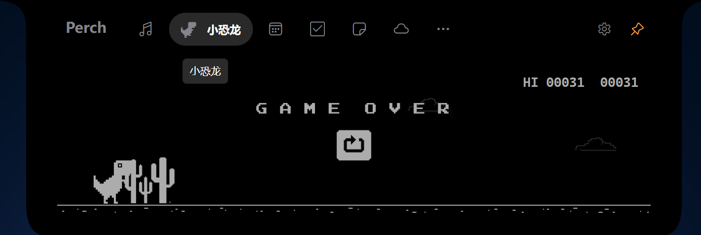
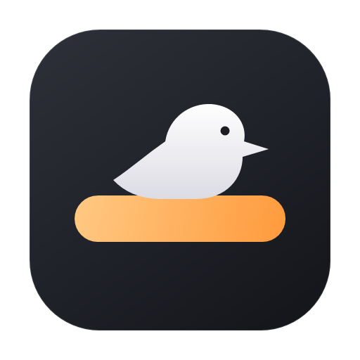
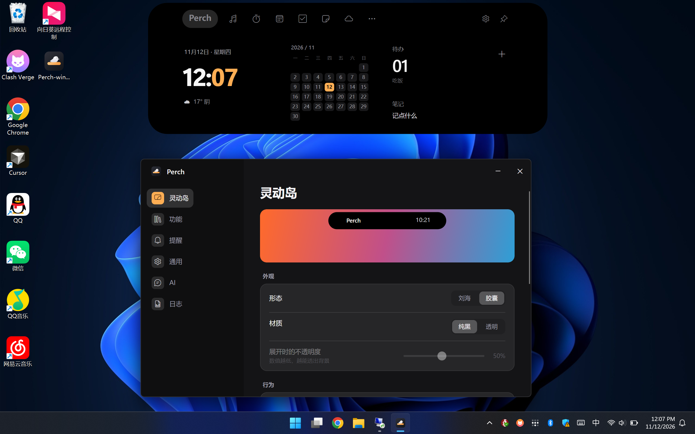

小恐龙Dinosaur runner
熟悉的像素小恐龙，就住在岛里。跳过仙人掌、躲开翼龙，忙里偷闲刷个新纪录。A familiar pixel dinosaur, right on your island. Jump over cacti, dodge birds and beat your best score.
看看怎么玩 →Learn to play →

Perch音乐、专注、随手记，还有 AI。需要时展开，忙碌时安静收起。Music, focus, quick notes and AI. Open when you need it. Tucked away when you don't.

在岛上问问 AI，或让小恐龙跑一会儿。Ask your AI a question, or take a break with the dinosaur.
v1.0.0 · AOT 单文件，下载即用，无需安装 .NET。v1.0.0 · One native executable. Download and run, no .NET install needed.
设置、笔记和待办保存在本机。AI、天气等在线功能按需联网。Settings, notes and to-dos are stored locally. Online features such as AI and weather connect as needed.